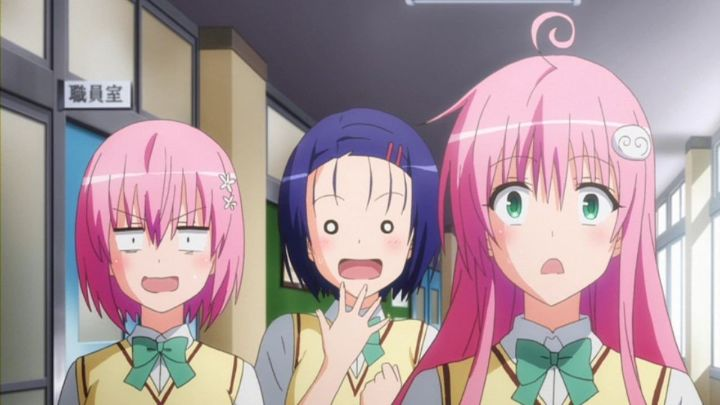

Disclaimer: This review covers seasons 2, 3 and 4 of the anime "To Love Ru," titled "Motto To Love Ru" (2010, 12 episodes), "To Love Ru Darkness" (2012, 12 episodes), and "To Love Ru Darkness 2nd" (2015, 14 episodes) respectively.When I last watched the first season of "To Love Ru," with a new English dub from Sentai Filmworks, I didn't have a strong intention to watch the rest of the anime franchise (making up four seasons, or five if you include the double-length of season one, and a whopping total of 64 episodes). But curiosity got the better of me. The first season was kind of sweet and charming in its old-school romantic-comedy hijinks, so why not enjoy a bit more? Those three extra seasons are titled (in order) "Motto To Love Ru," "To Love Ru Darkness," and "To Love Ru Darkness 2nd." Kinda confusing for new users to figure out what order to watch everything in, but whatever.The three are quite different however, almost enough to warrant they each have their own review, but I combined them here for efficiency. They're also quite different from the first season, which is a shame for me, since the season was what compelled me to keep watching."Motto To Love Ru" (literally translated to "More To Love Ru") continues where the last series left off: Rito Yuki is a hapless high school boy with a secret crush on the quiet Sairenji, and just resolved a misunderstanding of him confessing love to an alien princess named Lala Deviluke. Despite calling the intergalactic marriage off, Lala and Rito are still friends, among other earthlings they met, so they continue to live in the same house and go to the same school, while Lala still pines and clings to Rito as frequently as possible. Viewers will be confused to see a bunch of other new characters also living in the house: Lala's younger twin-sisters (Momo and Nana), and Celine, a flower-baby humanoid that adorably goo-goo-ga-ga's all over the place. Apparently, a bunch of OVA episodes introduce them, making those required viewing, but they (and all the other OVA's for the franchise) remain unlicensed and untranslated.Anyway, the fun of the prior season was the misunderstanding between Rito and all the girls around him, with the plotline of Lala and their impending marriage. That's all resolved here, so... there isn't really a story in "Motto." Just slice-of-life situations and milder comedy, mostly of everyone hanging out barefoot in the house. The format even feels more lazy, with each episode really consisting of three seven-minute bits. It feels like a ton of short-form OVA's: fun if you miss the characters, but entirely unnecessary. The nudity is a little more present, but the show likes to tease more than it shows, somewhat like before. The fanservice is frequent, but not all that exciting. Production quality is updated slightly, with slightly more rounded faces and less frantic visual comedy."Motto" does get a little better in its second half, slowly dishing out more risque scenes to titilate the viewer. And the last two episodes finally get back to story developments: will Rito finally confess his love to Sairenji? Will she confess her love back? Will Lala's feelings be returned? Sure, most people aren't going to watch "Ru" for the story, but these developments are what make the characters remotely interesting. It also introduces Momo's motivations for the following seasons. But those developments come too little, too late: "Motto" is the weakest season of the bunch, and you could just watch the last two episodes and skip the rest."Darkness" is a more drastic change, again perhaps updating to anime trends to be even more risque, and becoming more of an action-fanservice title rather than a pure slapstick comedy. Like the title suggests, it focuses heavily on the side-character Golden Darkness (or "Yami," as named in the English dub). In fact, Yumi and Momo are arguably the main characters here, while Lala is largely left out of events while everyone else figures things out. In the case of Yami, the stoic space assassin girl who decided to postpone Rito's death for the heck of it, her bosses in space haven't forgotten the mission, and increasingly force her to proceed with the task. In the case of Momo, she's become infatuated with Rito (like every other girl in the series), and even doesn't mind becoming his mistress while he marries her sister Lala: realizing the situation that many girls love Rtio, Momo pledges to give Rito a literal harem of brides, so that everyone can be happy. Except Rito of course, the pure boy that he is.  This is a far cry from the more manic comedy of the first season. Yami's plotline is much more serious, even dark. Not so much compared to other M-rated anime, but a little bit of a whiplash compared to the earlier seasons. Most of the original comedy came from Lala and her crazy malfunctioning inventions, and since she's barely in "Darkness," the tone is completely different. I was torn about how I felt about it... after so many episodes, it's nice to see some real character development and a plot that raises the stakes and intrigue, but it simply wasn't the "To Love Ru" I grew to love. I wanted more of Lala!And Momo's machinations lead to a lot more fanservice than before. Nipples are barred with wild abandon. Momo herself loves to sneak into Rito's bed and surprise him buck-naked. You'd think this would get old, but the show keeps finding new ways to present the recurring joke. The fanservice feels more risque, not just because of nudity of the girls, but specifically situations of Rito being nude himself, and the girls' acknowledgement of that. While always off-screen, there are a few scenes that imply genuine sex, at least as much as it could get away with on broadcast television. To put it simply, if you watched "To Love Ru" just for the sexy bits, "Darkness" was probably what you wanted from the start. But again, I kind of liked the first season for only having two, maybe three, girls falling for the main character. This late into the series, literally every character has the hots for him, just overcomplicating the story in favor of fanservice.The production quality of "Darkness" is also the best the series has seen yet, if only because it's cleaner and more polished, feeling more up to modern standards. It also feels more standard, losing a little of the visual character from that first season. Music choices in "Darkness" are a little more intentional, with mixed results.You'd think my thoughts on "Darkness" would follow with "Darkness 2nd," but with a few years difference between broadcasts, "2nd" is also surprisingly different from the prior three seasons (at this point, it's almost as though we got four completely different shows). "2nd" continues the story directly from the prior season, but with even more action, and more wild fanservice (every episode has at least one significant scene that would make even seasoned viewers blush, nearly to the level of porn). Again, if sexy scenes called you here, "2nd" will probably be your favorite season, although I increasingly began to question the age of the girls shown on screen, especially when Rito's younger sister gets to take part (I'll save you time: yes, many of the naked girls are well-underage). The story ends at a good climax for Yami's arc, but still doesn't resolve the core story regarding Rito and Sairenji, despite being so close. And the production quality changes drastically again, this time with more saturated colors and better shading, clearly inspired by what studio Ufotable had done elsewhere, but used inconsistently and in weird ways here. It's arguably the best looking season, but to the extent that it can become distracting. The English dub is decent, a little better than I remember for most of the characters. All except Momo and Nana. They both sound much older than Lala, older than all the characters for that matter. And they aren't very convicing when it comes to Momo's advances on Rito. The only level where their acting makes sense is their bickering as siblings. Anyway, while it's appreciated that Sentai Filmworks went so far as to dub the entire series years after the fact, viewers will probably prefer the subbed version."Motto To Love Ru," "To Love Ru Darkness" and "Darkness 2nd" do provide more of the characters that fans have presumably grown to love. It does progress the story a little, and provides a lot more fanservice to get excited for. Even the production quality has improved. This all sounds great, but in doing so, it misses what little the original series did right. Your mileage will vary, depending on why you were watching, or whether you particularly liked "To Love Ru" to begin with.
- "Ani" More reviews can be found at : https://2danicritic.github.io/ Previous review: review_To_Love_Ru Next review: review_To_Me,_The_One_Who_Loved_You,_and_To_Every_You_I've_Loved_Before